⛏Clear Creek Canyon and Virginia Canyon
Up Clear Creek's tunnels to the gold-rush towns of Black Hawk and Central City, then over the Oh My God Road, a dirt shelf road, into Idaho Springs.
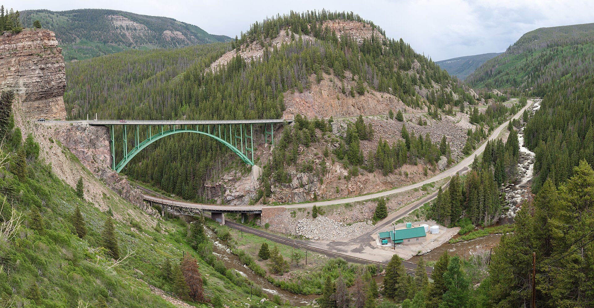
3 days · 2 nights in Red Cliff
Over Guanella and Boreas passes to a hidden canyon town, then a loop day over Independence Pass and up the Frying Pan.
Why ride it
Red Cliff is a tiny old mining town hidden in the Eagle River canyon under a green steel arch bridge, a perfect base for two nights. Getting there crosses five passes, including Guanella and the old Boreas railroad grade. The loop day is the showpiece: the WWII ski troopers' valley at Camp Hale, Leadville, Independence Pass at 12,095 ft, Aspen, then quiet gravel up the Frying Pan River and over Crooked Creek Pass. The ride home is short: Shrine Pass with a view of the Mount of the Holy Cross, Loveland Pass, and gold-rush back roads to Boulder.
The whole trip
Scroll or pinch to zoom; roads and their names appear as you zoom in. Day 1 in orange, day 2 in raspberry, day 3 in navy. Maps: © OpenStreetMap contributors, SRTM | style © OpenTopoMap (CC-BY-SA); relief and rivers: USGS The National Map.
Day 1
204 mi · about 4¼ h of riding · a little dirt
Boulder to Como · 104 mi
Up Clear Creek's tunnels to the gold-rush towns of Black Hawk and Central City, then over the Oh My God Road, a dirt shelf road, into Idaho Springs.
A Victorian silver town of painted houses and brick storefronts, where the Georgetown Loop steam train starts.
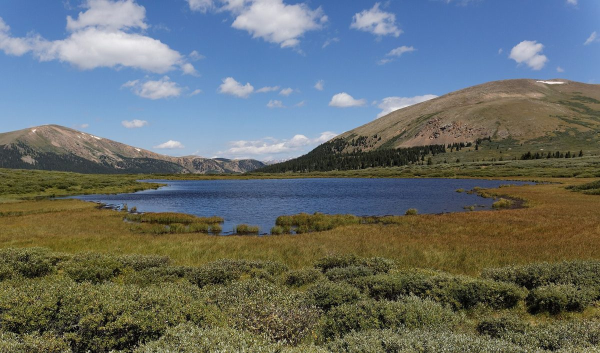
A scenic byway over 11,669 ft between two fourteeners, Mount Bierstadt and Mount Evans, with willow flats, beaver ponds and long views.
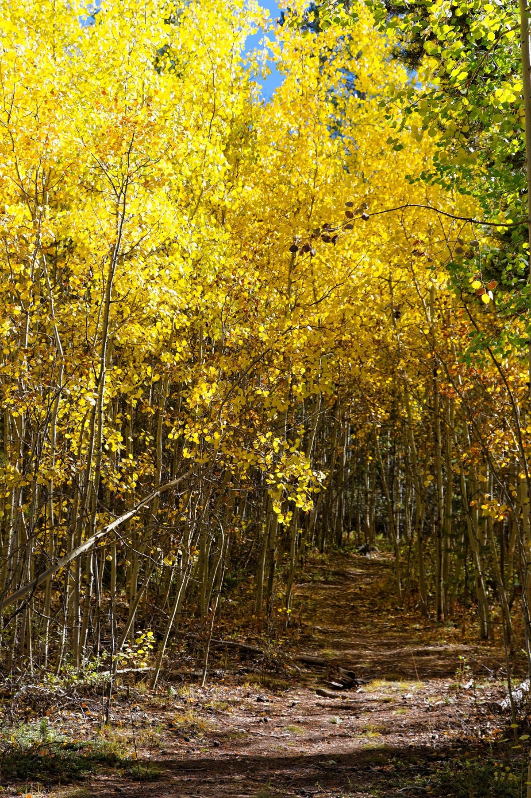
The top opens onto all of South Park: one of Colorado's great aspen views in the fall.

The stone roundhouse from 1881, built for the narrow-gauge trains that climbed Boreas Pass.
Como to Breckenridge · 21 mi
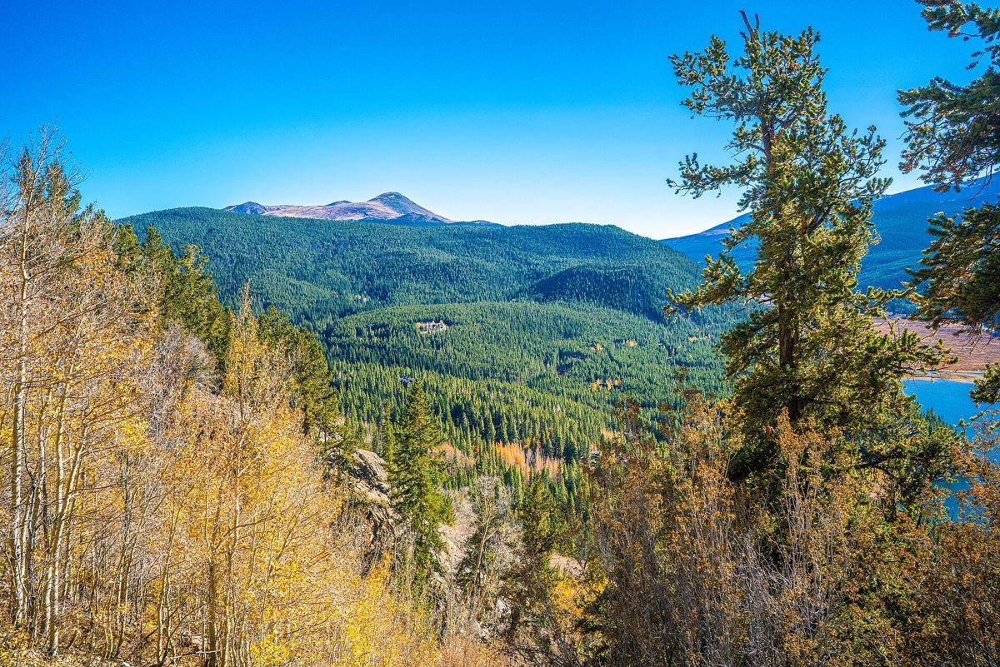
The old railroad bed at 11,481 ft: a restored section house and boxcar at the top, and Baker's Tank, an old water tank for the steam engines, on the way down.
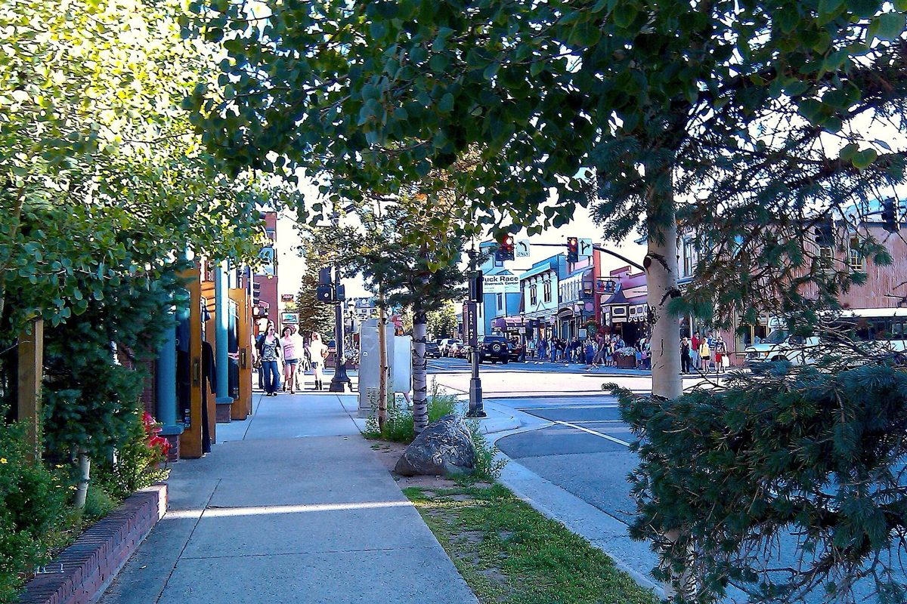
Lunch on the Victorian Main Street.
Breckenridge to Red Cliff · 78 mi
Over 11,318 ft past the giant Climax mine, then down to Leadville, the highest city in America.
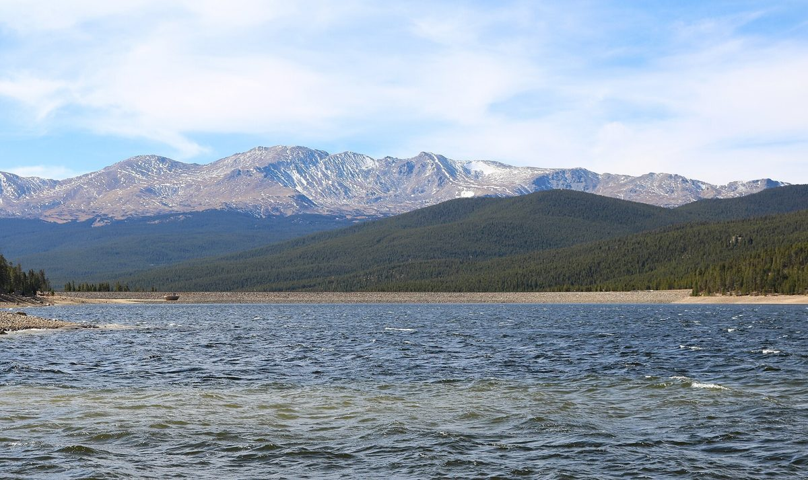
A quiet road around a big blue lake below Colorado's two highest peaks, Elbert and Massive, with a string of pullouts.
In World War II the 10th Mountain Division trained for mountain war on skis in this high valley. It's now a national monument.
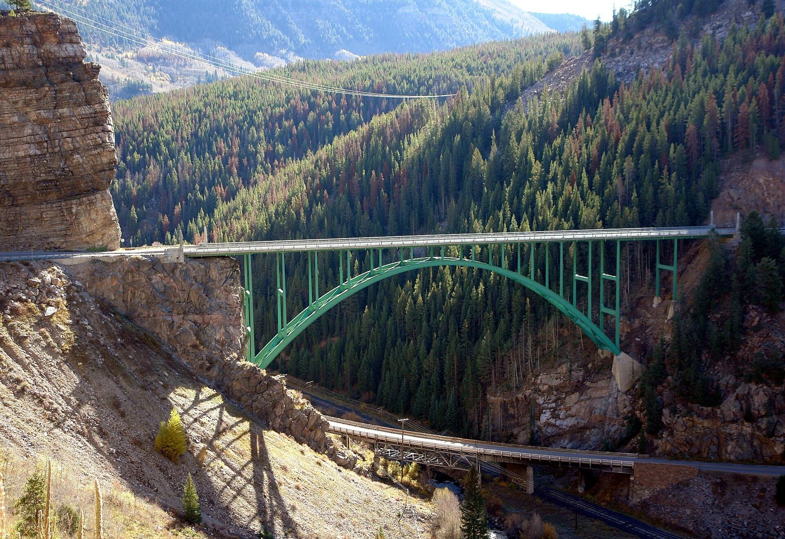
Tonight
A few dozen houses in a narrow canyon where Turkey Creek meets the Eagle River, with the green arch of the 1940 US 24 bridge high overhead. Quiet, unpolished and very Colorado, with Vail and Minturn a short ride away if you want a bigger dinner.
Day 2
210 mi · about 5¼ h · a quarter dirt
Red Cliff to Aspen · 84 mi
A gravel loop through the old training valley of the ski troopers, past the ruins of the camp.
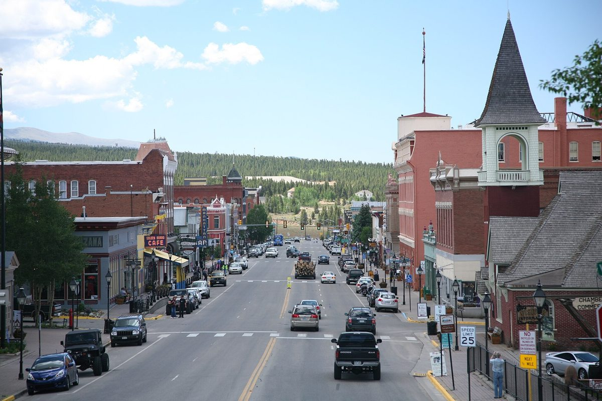
At 10,152 ft, the highest city in America: Harrison Avenue's brick blocks, the Tabor Opera House and the Matchless Mine, where Baby Doe Tabor waited out her last 30 years.
Two big glacial lakes under Mount Elbert, Colorado's highest peak, with a tiny historic village on the shore.
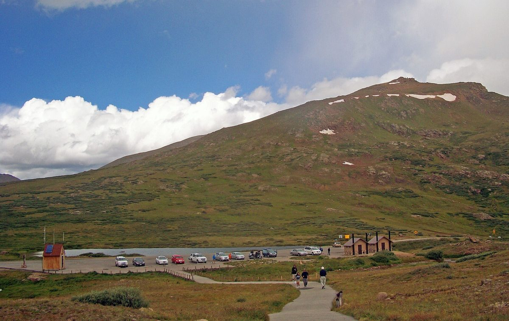
The Continental Divide at 12,095 ft, one of the highest paved passes in America, with tundra, snowfields into July and a short walk to the overlook.
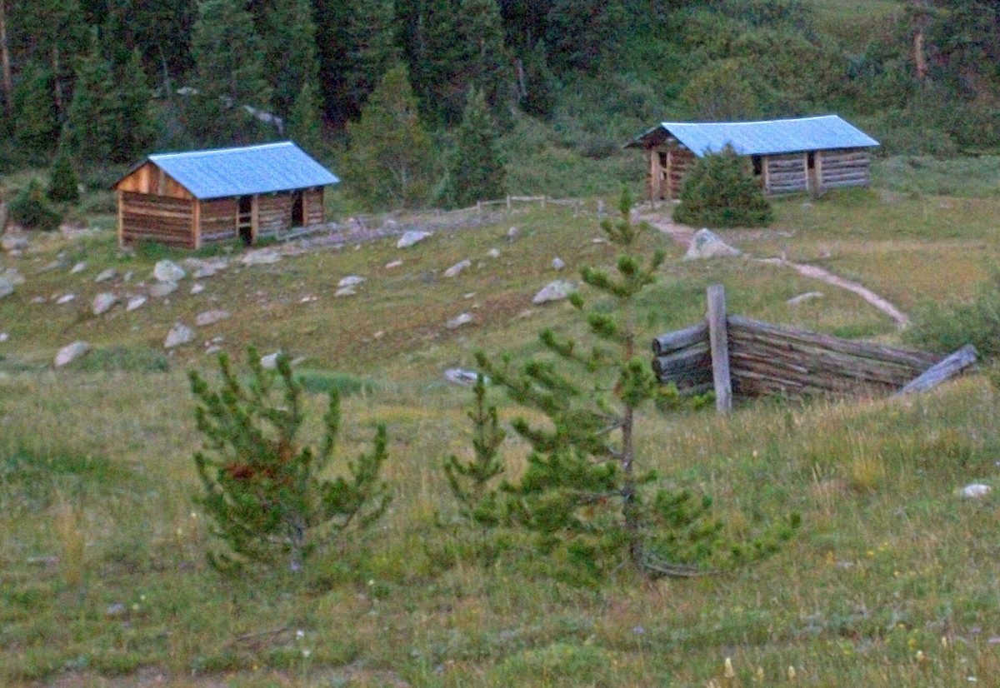
The log cabins of an 1879 gold camp, scattered in a high meadow right beside the road.
A short walk to the roaring Roaring Fork, carved potholes in the granite and cool ice caves.
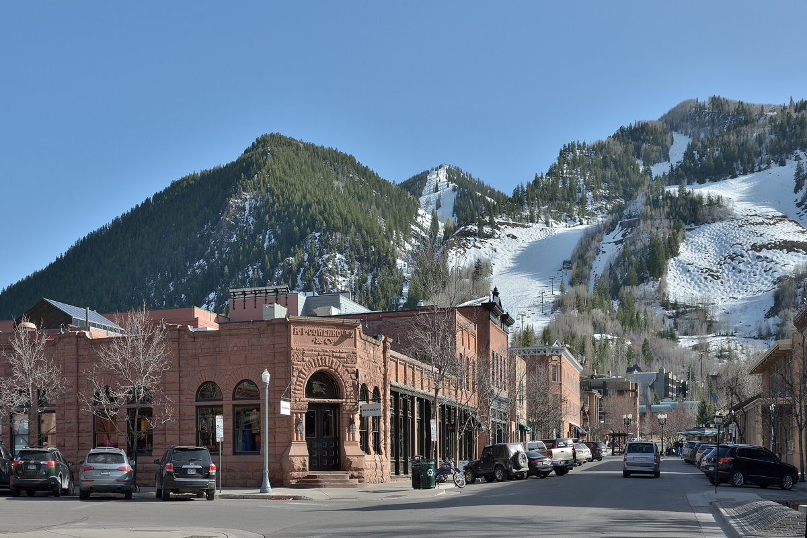
Ride through the silver-boom town turned glitzy ski resort. A coffee break if you like.
Aspen to Basalt · 19 mi
Hunter S. Thompson's hamlet, with its famous old tavern.
Lunch where the Frying Pan meets the Roaring Fork.
Basalt to Red Cliff · 108 mi
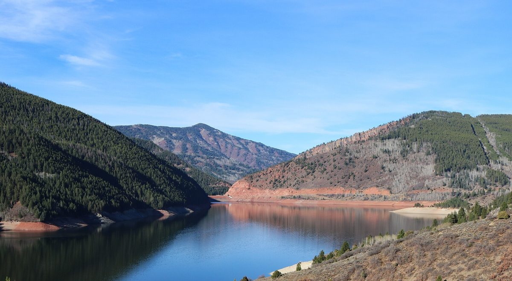
A red-rock canyon road beside Gold Medal trout water, up to Ruedi Reservoir and its overlooks.
Quiet gravel through aspen and high meadows, then down Brush Creek toward Eagle.
Back up the Eagle valley in the evening light, through Minturn and into the canyon.
Day 3
112 mi · about 2¾ h · a fifth dirt
Red Cliff to Idaho Springs · 71 mi
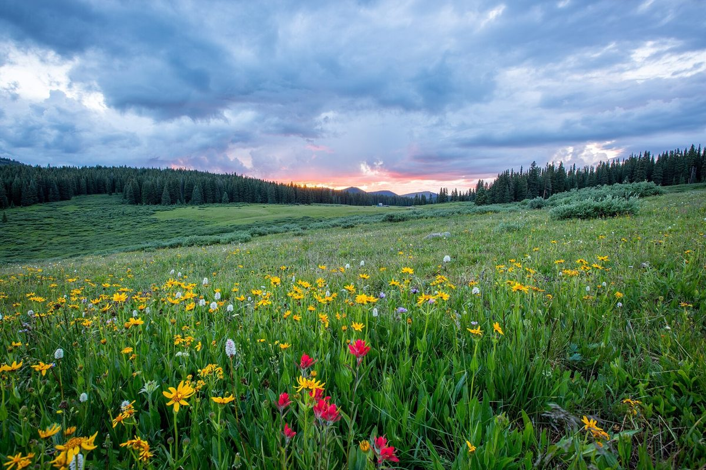
Gravel climbs through wildflower meadows to an overlook of the Mount of the Holy Cross, whose snow-filled cross made it a legend after William Henry Jackson photographed it in 1873.
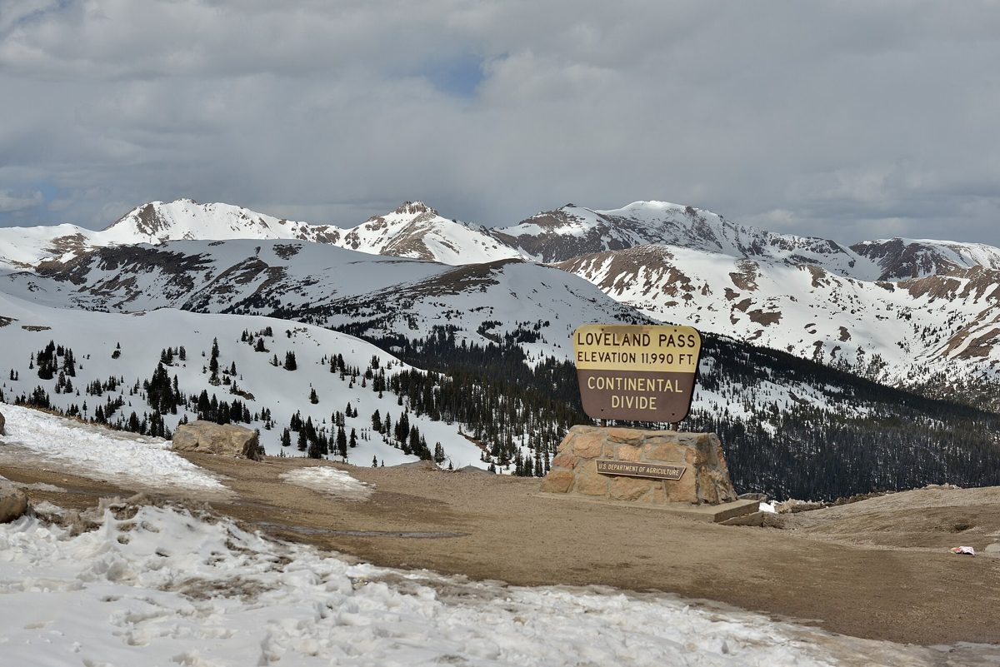
The Continental Divide at 11,990 ft, and the classic photo with the sign.

Lunch on Miner Street.
Idaho Springs to Boulder · 41 mi
Back roads over to Central City and up the Peak to Peak Highway, with the Indian Peaks lined up along the Divide.
The last dirt of the trip: down off the plateau and into Boulder Canyon.